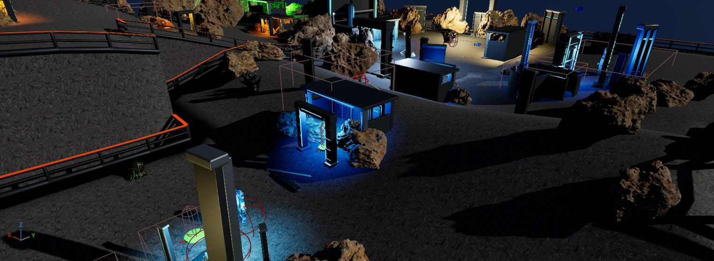
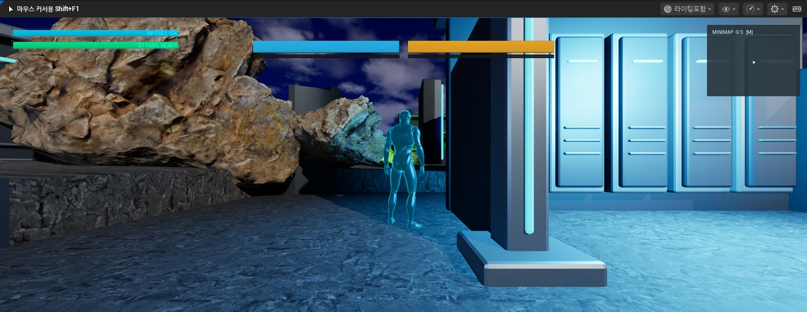
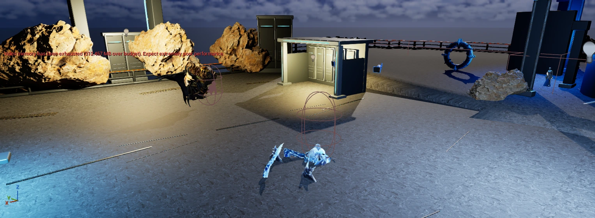
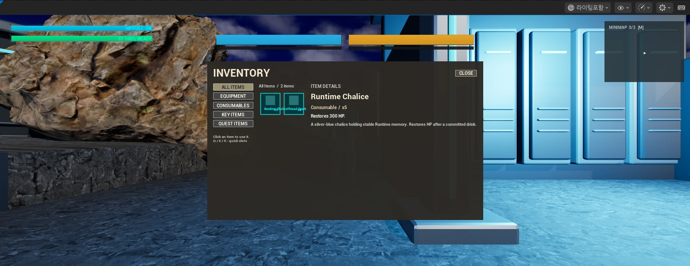
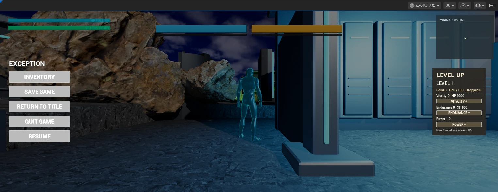
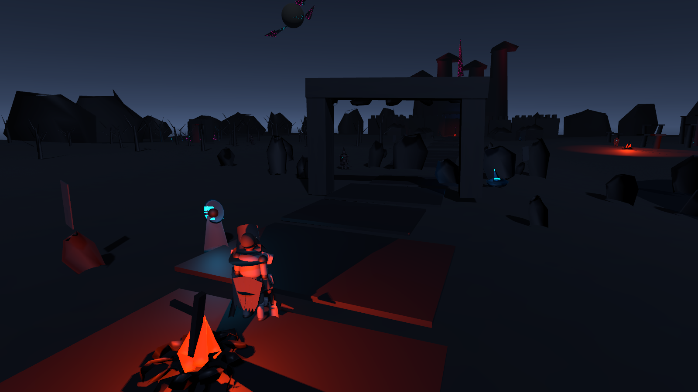
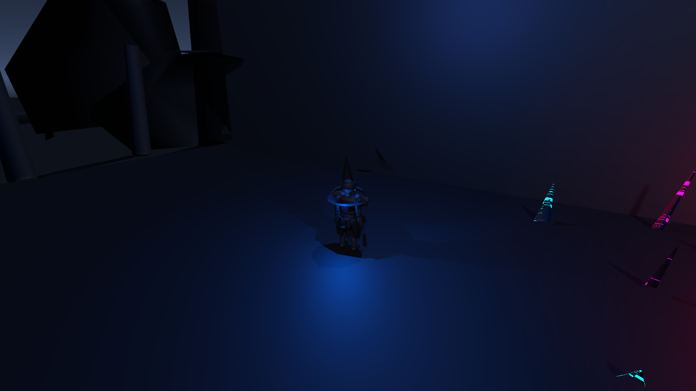
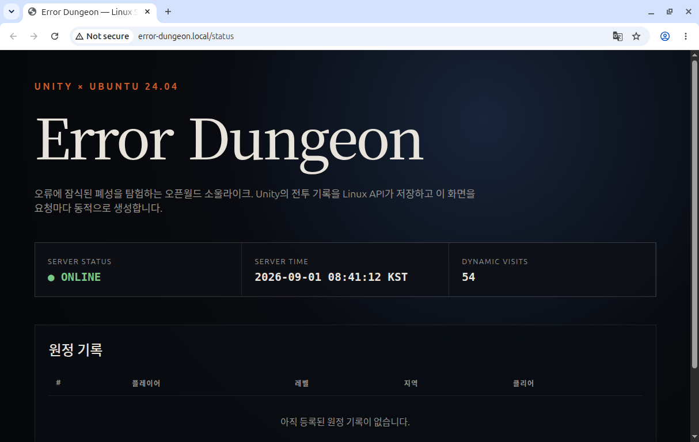
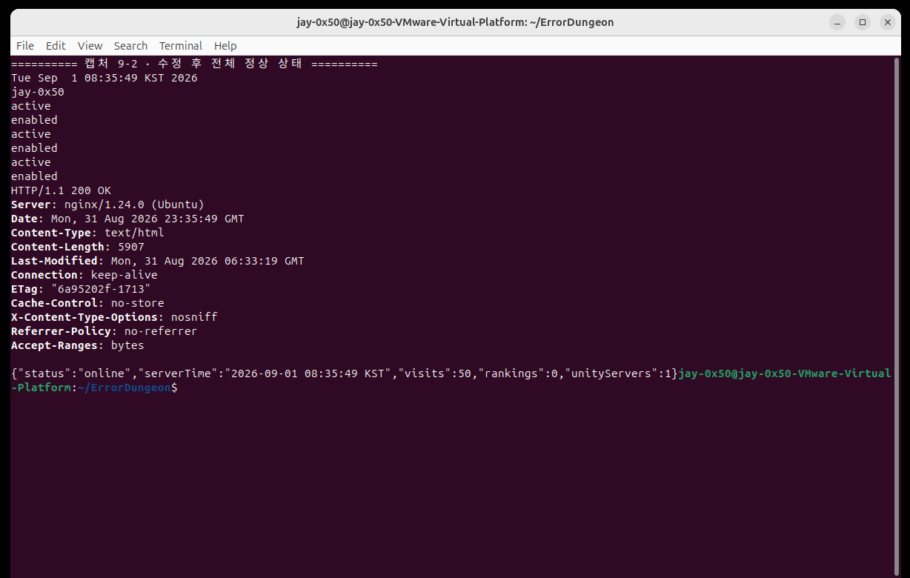
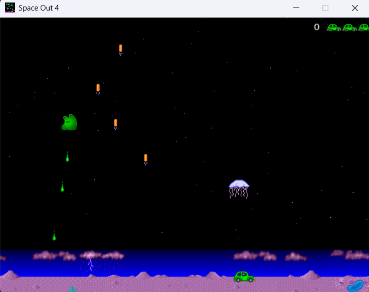

프로필
게임을 만들며 프로그래밍을 배우고 있는 고등학생입니다.
박재영
게임 클라이언트 · 게임플레이 개발
- 학교
- 미림마이스터고2024.03 ~ 현재 · 재학 중
- 학과
- 뉴미디어소프트웨어과
- 관심 분야
- 게임플레이 프로그래밍전투 · 입력 · UI · 게임 엔진
사용 기술
- C++ · Unreal Engine전투 판정, 보스 상태, HUD 구현
- C# · Unity입력 처리, 콤보, 사망·리스폰 구현
- Python · Pygame리듬 게임, 시간 계산과 입력 판정
- 개발 도구Git · GitHub · Visual Studio · VS Code
활동 · 협업
- CodeUs 동아리 부장교내 프로젝트 개발 동아리
- 6인 팀 메인 프로그래머보스 로직과 음성 입력 연동 담당
- 미림 해커톤 참가2024 · 2025
수상
- 앱잼 우수상2024
자격증
- CosPro Python 2급 · MOS Excel Expert
- ITQ인터넷 · 한글엑셀 · 한글파워포인트
- GTQ
목차
프로젝트의 시작부터, 구현하며 배운 것까지.
START소개
01Exception
02Error Dungeon
03PyMax
MORE배움과 다른 작업
회피와 패링으로 기회를 만드는 액션 RPG
손상된 Runtime을 탐험하고, 보스의 빈틈을 노려 Groggy와 처형으로 이어지는 전투를 만들고 있습니다.

보스전에 집중한 플레이
탐험, 전투, 사망 후 체크포인트 복귀로 이어지는 액션 RPG입니다.
전투 · 보스 · UI · 저장
공격·회피·패링, 보스 상태, HUD 갱신과 저장·로드를 구현했습니다.
서로 영향을 주는 상태
한 번의 공격에서의 중복 피해, 두 보스의 공격 시점과 간격, 처형 중 상태 전환을 다뤘습니다.
전투와 복귀 흐름 연결
공격별 적중 이력과 보스 조율자, 이벤트 기반 HUD를 연결했습니다. 현재 개발을 이어가고 있습니다.
판정 횟수와 피해 횟수를 분리했습니다.
범위 검사로 대상을 찾고, 공격 단위로 기록해 같은 대상에게 피해가 겹치지 않게 했습니다.


한 번의 공격, 한 번의 피해
- 문제
- 같은 대상이 여러 충돌 결과에 포함될 수 있습니다.
- 구현
- Sphere Sweep으로 후보를 찾고 TSet으로 공격별 적중 대상을 관리합니다. 피해가 적용된 대상만 기록합니다.
- 결과
- 같은 공격 안에서는 중복 대상을 건너뛰고, 다음 공격에서 이력을 초기화합니다.
두 보스의 공격 시점과 간격 조율
- 문제
- 각 보스가 독립적으로 공격하면 공격 시점이 겹칠 수 있습니다.
- 구현
- 공용 조율자에서 현재 공격자와 다음 공격 가능 시각을 검사합니다.
- 결과
- 동시 공격 허용 여부와 공격 간격을 한곳에서 결정합니다.
처형 중 상태 전환 · Groggy 회복 시 처형 상태를 확인하고, 처형 중이면 회복 타이머를 다시 예약합니다.
상태가 바뀌면 화면과 저장 데이터도 따라갑니다.
C++에서 수치와 상태를 관리하고, Blueprint에서 UI 배치와 연출을 연결했습니다.


플레이어가 바뀌어도 HUD 갱신
- 문제
- Pawn을 교체하면 이전 캐릭터를 바라보던 UI 연결을 정리해야 합니다.
- 구현
- 기존 Delegate를 해제하고 새 Pawn의 상태 변화에 바인딩한 뒤 현재 수치를 즉시 갱신합니다.
- 결과
- 캐릭터 상태를 HUD에 전달하는 연결과 화면 표시의 책임을 나눴습니다.
새 레벨의 플레이어에 저장 상태 적용
- 문제
- 레벨 이동 뒤에는 위치뿐 아니라 능력치와 인벤토리도 복구해야 합니다.
- 구현
- 체크포인트를 우선해 복귀 위치를 정하고, 저장된 상태를 새 플레이어에 적용합니다.
- 결과
- 위치·능력치·인벤토리의 복구를 하나의 로드 흐름으로 묶었습니다.
HUD 연결은 2026.09.11 작업본 기준입니다. 저장·로드는 아래 구현에서 확인할 수 있습니다.
공격을 이어가고, 실패해도 다시 도전하는 게임
폐성을 탐험하며 보스전에 도전하는 개인 프로젝트입니다. 전투 입력과 사망 후 복귀 흐름을 구현했습니다.


입력 버퍼로 3타 콤보 연결
- 문제
- 공격이 끝나기 전에 누른 입력도 다음 타격에 반영해야 합니다.
- 구현
- 입력을 버퍼에 저장하고 회복 구간 뒤 스태미나를 확인합니다.
- 결과
- 조건이 맞으면 다음 타격으로, 아니면 이동 상태로 돌아갑니다.
잃을 상태와 유지할 진행을 구분
- 문제
- 사망 뒤 재화, 적, 처치한 보스의 상태를 다르게 처리해야 합니다.
- 구현
- 재화를 사망 위치에 남기고 체크포인트에서 플레이어를 복구합니다.
- 결과
- 일반 적은 초기화하되 이미 처치한 보스의 진행은 유지합니다.
배포했는데 예전 화면이 보이는 문제를 추적했습니다.
WebGL 클라이언트와 API를 로컬 Linux VM에 배포하고, 파일과 응답을 확인하며 문제를 좁혔습니다.


VMware NAT·hosts 기반 로컬 환경. AI 도구의 코드·분석 보조를 활용하고, VM 배포 실행과 응답·로그 검증을 진행했습니다.
새 빌드와 실행 화면 불일치
- 문제
- 새 WebGL을 올렸는데 이전 모습이 보였습니다.
- 구현
- 로컬·배포 wasm의 SHA-256과 응답 헤더를 비교했습니다. /Build/에 no-cache를 적용하고 클린 빌드를 rsync로 재배포했습니다.
- 결과
- 배포 기록에서 로컬과 서버의 파일 해시가 일치하는 것을 확인했습니다.
API 재시작 중 일시적 502
- 문제
- 서비스를 재시작하는 순간 API 점검이 실패했습니다.
- 구현
- systemctl과 journalctl로 상태를 확인하고, curl 점검에 재시도를 추가했습니다.
- 결과
- 배포 당시 웹·API의 HTTP 200 응답과 3개 서비스의 active 상태를 확인했습니다.
재진입할 때 먼저 재생되던 음악의 시작 조건을 고쳤습니다.
곡 선택부터 플레이, 콤보·점수 계산과 결과 확인까지 한 프로그램으로 만들었습니다.


4키 리듬 게임
채보 로드, 노트 이동, 입력 판정과 콤보·점수·피버 게이지를 구현했습니다.
다시 들어가면 조기 재생
뒤로 갔다가 재진입하면 이미지·음원은 이미 준비됐는데 로딩 대기는 그대로 남아, 노래와 영상이 먼저 재생됐습니다.
시간 대신 준비 상태 확인
정해진 로딩 대기 시간에 맞추던 시작 조건을 리소스 로딩 완료 기준으로 변경했습니다.
로딩 완료 뒤 재생 시작
재진입 시 미디어가 먼저 재생되는 문제를 수정했습니다. 화면의 대기 시간과 실제 준비 상태를 구분하는 중요성을 배웠습니다.
게임을 만드는 원리를 넓혀 왔습니다.
학습 프로젝트는 실습한 범위를, 다른 프로젝트는 직접 맡은 기능을 중심으로 정리했습니다.

게임 클라이언트 개발자로 함께 일하고 싶습니다.
C++ · Unreal Engine · C# · Unity